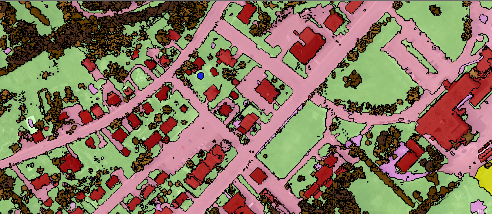

8 Advanced Classification and Accuracy Assesment
8.1 Summary
A continuation of last week’s look into the classification of remotely sensed imaging, we focused this week on a handful of more advanced methods, with a particular focus on determining the accuracy of classifications. I will briefly touch on some of those methods before taking the majority of the summary to talk about accuracy assessment.
8.1.1 Object Based Image Analysis
Object based image analysis is a method of analysing remotely sensed data at the multi-pixel or ‘superpixel’ level by identifying discrete physical objects (buildings, small bodies of water, fields, etc…) which can then be classified at object level as opposed to considering pixels in isolation (Blaschke 2010).

The most common way of doing this is an algorithm known as Simple Linear Iterative Clustering, which partitions the image into a grid before iteratively moving the centre of each cell to best capture the pixels which maximise the homogeneity of the chunk, in a manner similar to k-means clustering (Achanta et al. 2012). This algorithm attempts to keep objects both spatially and spectrally compact, meaning they retain a consistent appearance and a small physical distance from end to end.
8.1.2 Sub-Pixel Analysis
In contrast to analysis at the multi-pixel analysis, sub-pixel analysis concerns the classification of individual pixels when they may fall into multiple land-cover categories. This is particularly important for satellite imagery taken at a low spatial resolution, where individual pixels represent a larger share of land area (DU et al. 2014). A classic method for sub-pixel analysis is multiple endmember spectral mixture analysis, also known as MESMA, which attempts to identify the proportion of each landcover type within each pixel. To do this, each pixel’s spectral signature is compared against endmembers (spectral representations of landcover types - often but not always soil, vegetation, and impervious surfaces) to identify the endmembers which most contributed to the pixel’s ‘mixed signature’ (Quintano, Fernández-Manso, and Roberts 2013). This process is known as unmixing - basically breaking a pixel down into its constituent landcover components.
8.1.3 Accuracy Assessment
The key issue we focused on in lecture (and which I would like to focus on in this review) is that of determining how accurately a landcover classification algorithm has actually divided an image. There are two key accuracy metrics to consider:
- Producer’s Accuracy
Producer’s accuracy, or PA, is the percentage of pixels correctly classified by landcover (Barsi et al. 2018). In other words, if I select a pixel that’s ‘bare earth’, what’s the likelihood that it has been classified as bare earth by our algorithm? - User’s Accuracy
User’s Accuracy is a measure of the proportion of pixels classified as a particular class which actually belong to that class (Barsi et al. 2018). In other words, if I select a random pixel which was classified as ‘bare earth’, what’s the likelihood that it’s actually bare earth?
There is an inherent trade-off between these two metrics - if an algorithm is ‘quick to classify’ pixels as a certain class when they may not belong to that class, it ensures that all pixels of that class are captured but the algorithm may also capture pixels not belonging to that class. On the other hand, an algorithm which only classifies pixels as a given class when it’s absolutely positive is one for which you can assume those pixels to be of that class with a high degree of confidence, but there will likely be many pixels of that class not captured by the algorithm.
There are a handful of metrics which attempt to capture, in a single statistic, the accuracy of a classification algorithm. One of the most widely used, the Kappa coefficient, attempts to measure how well a model classifies an image when compared to an algorithm randomly classifying pixels (Foody 2020). There are, however, a number of issues with the measure with some arguing that it is difficult to interpret and doesn’t accurately capture ‘chance agreement’ as intended (Foody 2020).
8.1.4 Machine Learning Approaches
Finally, we touched on a handful of approaches which deploy machine learning to in order to maximise classification accuracy. The basic principle underlying these principles is that a model trained on a particular dataset will then be tested against a portion of that dataset which it has not yet seen. Typically this means that a dataset will be subdivided into folds, where each fold can be used as a test set for an algorithm trained on all other folds (Stock and Subramaniam 2022). One version of this approach, known as ‘leave-one-out cross-validation’, uses a number of folds equivalent to the number of observations in the dataset, effectively testing each algorithm on a single data point (Stock and Subramaniam 2022).
A key issue, unique to spatial data, arises in the form of spatial autocorrelation. If our testing and training data are in close proximity, they’re likely to be similar to each other. The test set is unlikely, then, to represent a novel sort of data which can accurately assess the algorithm at hand. A solution comes in the form of random k-fold cross-validation, where the data is not split randomly but spatially, and individual folds are spatially non-overlapping (Wang, Zhodadadzadeh, and Zurita-Milla 2023). More advanced methods will further subdivide these folds into inner folds and test multiple models with randomly selected parameters in attempt to find the best possible model.
8.2 Applications in Research
For this section I will discuss both a paper that expands on the methods described above as well as one which applies these methods for a particular use case.
Stock and Subramaniam (2022) propose a novel method of leave-one-out cross-validation, which they call iterative spatial leave-one-out cross-validation, or iSLOOCV. Typical spatial leave-one-out cross-validation (SLOOCV) works by excluding any observations within a certain distance \(r\) of the single test set variable to avoid spatial autocorrelation effects. The method proposed by Stock and Subramaniam (2022) introduces an iterative element, wherein \(r\) is varied from 100 metres to 200 kilometres in order to identify shifts in error over the different threshold differences and identify the minimum separation required to avoid spatial autocorrelation effects.
An application of Object-based image analysis which is of particular interest to me is its use in change detection. Given the nature of change (as seen from above) as often concerned with changes in discrete objects at ground-level, it’s easy to see why object-based methods are a sensible choice. Im, Jensen, and Tullis (2008) develop a new method of change detection attempting to evaluate changes in landcover at the object level. To do this, they normalise data across their two images (before and after) and extract reference points which are classified into five ‘unchanged classes’ (landcover was the same between both images) and three ‘change classes’, representing examples of different types of change. They then applied nearest-neighbour and decision tree classification algorithms to their images in order to generate what they called an ‘object correlation image’. They then compared their results against images generated by an existing methodology (neighbourhood correlation image) which classified local, multi-pixel areas but didn’t use any sort of object detection. Object-based performed the best classification and had higher kappa values than the neighbourhood-based analysis (although as discussed previously, kappa coefficients are not a bulletproof metric).
8.3 Reflection
In my opinion, the most telling lesson amidst the topics discussed on remote sensing classes is that of the Kappa coefficient. It’s a reminder to me that even in an academic setting, where one would hope that accuracy is paramount, established methods can take hold even when reasonable alternatives exist. I was surprised to see in Im, Jensen, and Tullis (2008) that the metrics being used to show accuracy were Producer’s accuracy, User’s accuracy, and the Kappa coefficient. No other accuracy metrics were provided. Additionally, the coefficients generated were all within a narrow, 4% band making it difficult to understand a) how good the classifiers are in general and b) if the new object-based method is really all that much better than existing methods.
I’ve already encountered the use of some of the more robust accuracy metrics we discussed in class when doing research for our group presentation assessment, such the Receiver Operating Characteristic Curve (the details for which I omitted to save space). To that end, I know preferable metrics can be used with relative ease so the lag in adoption is interesting to see.